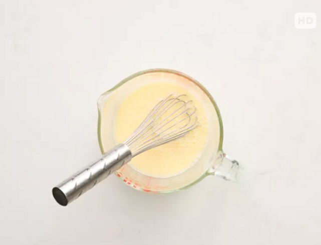

About Baking
Baking is an ancient cooking method that uses dry heat, typically in an oven, to cook foods like bread, cakes, and pastries. Heat is transferred to the food via convection and conduction, which triggers chemical reactions that transform ingredients like flour, sugar, eggs, and leavening agents into a solid structure with a firm crust and soft interior. Common ingredients and techniques include flour for structure, sugars for flavor and browning, eggs as binders, and fats for tenderness, while techniques like creaming and kneading are used to develop texture and gluten.
Popular recipe
Try out these easy and tasty baking recipes for beginners.The popular recipe we make is cinnamon rolls because cinnamon rolls are popular, especially among students, so our best recipe is cinnamon rolls. But you can try our dinner rolls and chocolate muffins, which are also delicious with our recipe.
Soft Roll

History of Soft Rolls
The history of soft rolls dates back to ancient Egypt, where early forms of leavened bread were created. Over time, techniques for making lighter, airier rolls evolved in Europe, especially in places like Germany and Austria. The 19th and 20th centuries saw the rise of commercial baking and mass production, making soft rolls widely available, and specific types like the Parker House roll became American staples.Ingredients
2 cups all-purpose flour
2 teaspoons baking powder
¾ teaspoon salt
¾ cup (150g) sugar
2 large eggs
¾ cup (180ml) milk,
room temperature
½ cup (114g) unsalted butter, melted and cooled
1 teaspoon vanilla extract Optional: ½ cup (100g) chocolate chips or fruit for mix-ins
Procedure
Step 1
Combine Milk, Sugar, and Butter Add milk, sugar, and butter pads to a microwave-safe bowl. Microwave on high for 1 minute. Stir and let cool until the temperature reaches 105-110°F.
Step 2
Proof the Yeast Pour the milk mixture into the bowl of a stand mixer fitted with a dough hook attachment. Sprinkle yeast on top and gently stir. Let sit for 10 minutes or until foamy. The warm water activates the yeast, so be diligent about checking for the right temperature. You need to be somewhere between 100-110°F .
Step 3
Make the Dough Slowly mix in the egg (beaten) and salt. Set the mixer to medium-low speed and slowly add flour (1 cup at a time) until the dough comes together and starts to pull away from the sides of the mixing bowl.
Step 4
Knead the Dough Allow the mixer to knead the dough on medium-low speed for 3 more minutes or knead by hand for 8 minutes. The dough should be sticky but not so sticky that it clings to your fingers just barely sticks.
Step 5
Let the Dough Rise Transfer the dough to a greased bowl and cover with plastic wrap or a damp kitchen towel. Let rise in a warm place for 1 hour or until doubled in size. The dough will rise more quickly in a warm environment, so keep it in a draft free location
Step 6
Shape the Dough Balls Gently punch the dough down and turn out onto a lightly floured surface. Divide into 15 equal pieces and then shape into smooth dough balls.
Step 7
Second Rise Place in a greased 9 x 13-inch baking dish with each dough ball equally spaced apart. Cover with a sheet of greased plastic wrap and place in a warm spot to rise for 1 hour or until they have doubled in size.
Step 8
Bake the Rolls Bake for 16-20 minutes until rolls are cooked through and tops are golden brown. Be careful not to overbake or the rolls may turn out tough and dry.
Step 9
Brush with Butter Remove from oven and immediately brush the tops with melted butter. Allow to cool for a couple minutes before serving.
Chocolate Muffin

History of Chocolate Muffin
The history of the chocolate muffin is intertwined with the evolution of the American-style muffin, which developed from earlier English muffins in the 19th century. While the term "muffin" dates to at least the 11th century in Wales, the inclusion of chocolate, particularly through the invention of the chocolate chip in the 1930s, transformed the muffin into a common sweet treat. Origin of the muffins The origins of muffins date back to Europe. The word "muffin" is thought to have originated from the French term "moufflet", which meant soft bread. However, the modern muffin as we know it today was developed in the United States in the 19th century. English immigrants brought traditional recipes for muffins, but American versions soon appeared, creating a denser, sweeter and more cake-like texture. Maffins are appreciated in different parts of the world and their popularity transcends geographical boundaries. In North America, muffins are a common breakfast ingredient. They are often enjoyed with a cup of coffee or tea and are available in bakeries, cafés and grocery stores. In the UK, muffins are usually baked, split and spread with butter or jam. They are an important part of the traditional afternoon tea. There are many topping options for muffins. Popular toppings for sweet muffins are streusel (a crumble of flour, sugar and butter), cinnamon sugar, icing sugar, glazes (such as lemon or chocolate) or even a drizzle of honey. Sweet muffins can also have delicious fillings such as chocolate chips, blueberries, raspberries, bananas, nuts or dried fruit to add flavour and texture. For a richer flavour, top them with fruit or sweet toppings. Savoury muffins are less common, but just as impressive. These versions often contain ingredients such as cheese, herbs, vegetables or meat. Toppings for savoury muffins can be grated cheese, herbs, sun-dried tomatoes, chopped olives or even pesto. Savoury muffins are a great accompaniment to soups, stews or salads.
Procedure
Step 1
Gather all ingredients. Preheat the oven to 400 degrees F (200 degrees C). Grease a 12-cup muffin tin or line cups with paper liners.
Step 2
Stir flour, baking powder, salt, and sugar together in a large bowl; make a well in the center.
Step 3
Beat egg with a fork in a small bowl or 2-cup measuring cup; whisk in milk and oil.
Step 4
Pour egg mixture all at once into flour mixture; mix quickly and lightly with a fork until just moistened. The batter will be lumpy. (Fold in additional ingredients if using; see variations below).
Step 5
Spoon batter into the prepared muffin cups, filling each 3/4 full.
Step 6
Bake in the preheated oven until tops spring back when lightly pressed, about 25 minutes.
Step 7
Enjoy!
Cinnamon Roll

History of Cinnamon Rolls
Cinnamon rolls originated in Northern Europe, likely Germany and Sweden, with the modern ver sio nemerging in the early 20th century after the spice trade made cinnamon more accessible to Europeans. The pastry, known as "kanelbulle" in Sweden, gained popullarity after World War I and spread to the U.S. with German and Swedish immigrants, where it evolved into the larger, often frosting-topped rolls common today. A cinnamon rolll (also known as cinnamon bun, cinnamon swirl, cinnamon scroll cinnamon Danish and cinnamon snail) is a sweet roll commonly served in Northern Europe and North America. A cinnamon roll consists of arolled sheet of yeast-leavened sweet bread doughor Viennoiserie, onto which a cinnamon and sugar mixture (with some variations including brown sugar, raisins or other ingredients) is sprinkled over a thin coat of butter. The dough is then rolled, cut into individualportions and normally baked, however a deep-fried version is called cinnamon roll or cinnamon bun doughnut. Arab spice traders introduced the Sri Lankan cinnamon spice to Europe. The origin of cinnamon rolls is unknown but might be in Byzantium. The oldest recorded recipes for cinnamon rolls are from Germany inthe 16th century. In Denmark the cinnamon roll is known as "kanelsneg", in Sweden it is called kanelbulle, in Norway it is known as kanelbolle, skilling sbolle, kanelsnurr, or kanel i svingene ene in in Finland it is known as korvapuusti, uusti in in Iceland it is known as kanilsnúður, and in Estonia it is known as kaneelirull. In Austria and Germany, it is called Zimtschnecke. In Slovakia and the Czech Republic, it is called škoricové slimáky/skořicoví šneci (meaning 'cinnamon snails). American cinnamon rolls are frequently large, baked in a pan and topped with cream cheese icling (usually confectioners sugar-based) and are sometimes fried, finished withglaze, and served as a variation of a ralised donut. There are also regionall combinations: in the American Midwest, especially Nebraska and Kansas, cinnamon rolls are commonly eaten with chili. There are also regions that include bacon pieces. In Asian cultures, cinnamon rolls may be made using a yeast bread technique called tangzhong The technique is closely associated with Japanese milk bread since it gives it a soft, feathery texture. By heating flour at exactly 65°Cor 149°, the starches within the flour will pre gelatinize, causing it to thicken more than average. Tangzhong allows the starches to retain moisture for longer periods of time, resulting ina longer shelf life.
Ingredients
For the Dough: Flour (all-purpose, bread, or enriched wheat flour)
Yeast: (active dry or instant) Milk: (warm) Sugar: (granulated white) Butter: (unsalted, room temperature or melted) Eggs Salt
For the Filling: Brown Sugar (light or dark, packed) Cinnamon (ground) Butter (softened)
For the Frosting: Powdered Sugar (confectioners sugar) Milk Cream Cheese (softened) Butter (softened) Vanilla Extract
Procedure
Step:1
Gather Ingredients. Preheat the oven to 400deg F (200degC). Brush an 8-inch square baking dish with 1 tablespoon of the melted butter

Step 2
To make the dough: Whisk flour, white sugar, baking powder, and salt together in a large bowl. Work 3 tablespoons softened butter into flour mixture using your hands until butter is lentil-sized.

Step 3
Pour milk into flour-butter mixture and stir with a rubber spatula until a soft dough forms.

Step 4
Turn dough out onto a well-floured work surface and roll dough into a 10-inch square pan. Brush surface of dough with remaining 2 tablespoons melted butter.

Step 5
To make the filling: Whisk ¼ cup white sugar, brown sugar, and cinnamon together in a small bowl. Sprinkle 1 tablespoon cinnamon-sugar mixture in the bottom of the prepared baking dish. Sprinkle remaining cinnamon sugar over butter-brushed dough.

Step 6
Roll dough around filling to form a log; cut log into 9 rolls about
1-inch wide; place rolls, cut-side up, in the prepared baking dish.
Step 7
Bake in the preheated oven until rolls are puffed and lightly golden, 20 to 25 minutes.

Step 8
To make the frosting: Beat confectioners' sugar, cream cheese, 1/4 cup softened butter, and vanilla extract together in a bowl until frosting is smooth.

Step 9
Top hot cinnamon rolls with cream cheese frosting.